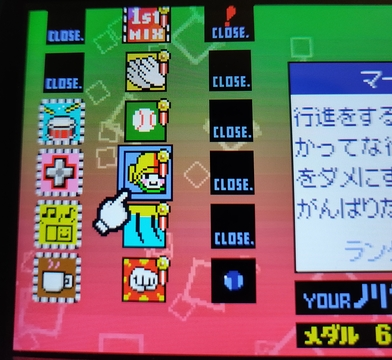
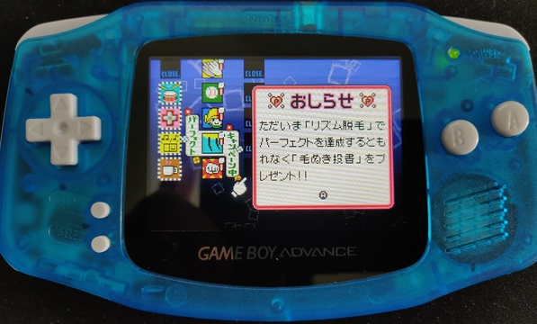

Felipe Martín
April 2021

Personal
Finally flied a bit with my Drone! I bought it cause a good offer came up, but here is usually very windy plus I need to go a bit far away to a flight allowed zone. And well even if it wasn't the perfect weather to film around it was very good to lose the fear to lose the drone around even when I couldn't see it because it was too far away.
Can't wait for better weather though! Videos have a very good quality and the shots are just amazing from up there.
Projects
Preparing a community given approach to switch-games-json since the other repository I'm basing it off is not active since last year and PR suggestions are not being merged.
games-screenshot-manager is going under a huge refactor since the proof of concept is working very well on my end (being using it for a few months now) so it's time to make the codebase more decent.
Trying out hugo as a replacement for lektor for this blog. I still need to figure out if the benefits are worth it the time investment.
After doing Go for a while figured out what a pain in the ass is to deploy/containerize python applications.
Books
Started reading Doctor Aphra (2020 - present)
I like it, but my subscription ended after trying it for a month, and since I haven't seen any improvement to the app and the pages loading I'm not paying it anymore... it's $10/mo of suffering anytime I want to just read for 10 minutes. It's a shame since people made a lot of recommendations to read Marvel related things, but I'm assuming I would just end up buying the tomes physically. Wait... maybe this was Marvel's plan all along?
Reading The Gamer
I started this a while ago and I've came back to it. Since I didn't remember where chapter I was in I just started it again. And boy I am glad... I didn't remember a thing!
Reaading DICE
Keeping the pace up a bit, I'm still far away from reaching the current episode, but it keeps getting interesting.
TVShows and Movies
Still watching Suits
We watch it at lunch/dinner time. Not that I'm enjoying it much anymore, but it's still way better than regular TV.
Finished Falcon & The Winter Soldier
Oh man, only six episodes! The show was amazing, but I feel like a couple of extra episodes wouldn't have hurt character development. And now the wait until Loki premieres on June... :(
Watched Invincible season 1
A pleasant surprise on Amazon Prime. I'm up to date and I'm liking it, it's start a bit childish but oh boy you're up to a surprise on the first episode. It seems is based on comics as well, so how knows if I would grow impatient and just read the comics instead of waiting for the next seasons.
Games
-
So. What is this madness Nintendo? Are you serious? Not only there's another world with both a crazy hard level to beat and an almost infinite star box, but now I'm supposed to beat every level with every character?

Rhythm Tengoku (リズム天国 / Rhythm Heaven)
So I discovered this game on a friend's stream and I instantly fell in love. Got it second hand complete (with its box, manual and everything!). I have played various rhythm games over the years and let me tell you this one is hard. It measures your rhythm at the beginning and oh boy I'm up for a challenge here...

Articles
- This man thought opening a TXT file is fine, he thought wrong.
- How Runescape catches botters, and why they didn’t catch me
- (tweet) I made a 4 kilobytes procedural image for @revision_party!
- (tweet) A plane took off 1200kg heavier than the pilot realized due to coded bias [...]
- (video) Guidance By Railway Tracks
- Docker without docker
- Why Do Long Options Start with Two Dashes?
- The Developer Certificate of Origin is a great alternative to a CLA
- (tweet) Germany has opened its first electrified highway for trucks near Frankfurt...
- Tour inside Nintendo headquarters in 1970
- CVE-2021-30481: Source engine remote code execution via game invites